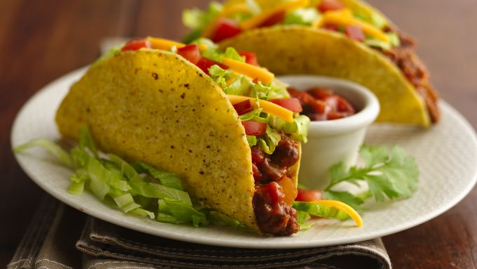

Easy Beef Tacos

Where do Tacos come from?
Food historians aren’t entirely sure about the exact origins of Mexico’s most famous culinary export. In Jeffrey M. Pilcher’s book, Planet Taco: A Global History of Mexican Food, he suggests that the dish might have become popular with 18th century silver miners, who named the handheld food after small explosive charges used to excavate ore. The dish grew in popularity through the growth of taquerias in Mexico City.
Ingredients
- 1 pound lean (at least 80%) ground beef
- 1 cup Old El Paso™ Thick 'n Chunky salsa
- 10 Old El Paso™ taco shells
- 1/2 head lettuce, shredded
- 1 medium tomato, chopped (3/4 cup)
- 1 cup shredded Cheddar cheese (4 ounces)
Steps
- mix corn flour, water and salt
- we make six equal balls in size
- work them with our hands and flatten them delicately
- we cook them in a nonstick pan, with olive oil about six minutes
- we make a cut on one side and fill it to taste with the mixture of ingredients: cheese, chicken and avocado crushed with a fork
Go back to homepage